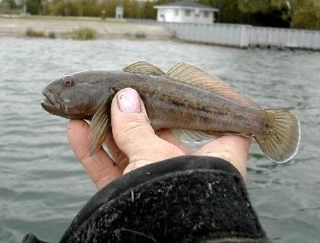
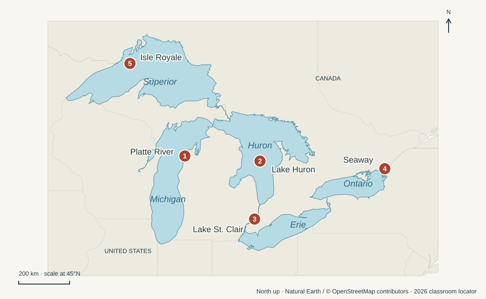

Left: zebra—hard surfaces, pipes, and intakes. Right: quagga—also reaches deeper water and soft bottoms. Both filter food from the water. Photo: USGS · Tap to enlarge.

Round goby
A small, bottom-dwelling fish carried to the Great Lakes in ships’ ballast water. It eats zebra and quagga mussels, competes with native bottom-dwelling fish, and becomes food for larger fish and diving birds.
Eating invasive mussels does not make it a simple solution: gobies can pass contaminants up the food web and are implicated in the transfer of botulism toxin to fish-eating birds.
Howard Tanner & Wayne Tody — Michigan fisheries officials who choose Pacific salmon to eat alewives and build a sport fishery.
Sonya Santavy — The young biologist who finds a zebra mussel in Lake St. Clair in 1988.
Phyllis Green & David Hand — The Isle Royale superintendent and engineer who work with the ferry crew to treat ballast water.
Settings

Across the Great Lakes. Numbers match the list below. Same lake outlines as our classroom map; markers locate settings, not exact release or sampling sites. Isle Royale is marked as an island area at this scale. Open full-size map ↗ Swipe sideways to explore the map on a phone.
1. Lake Michigan & the Platte River — The salmon experiment begins in tributaries and transforms fishing around the lake.
2. Lake Huron — The later collapse of its salmon fishery exposes the limits of managing predators and their food supply.
3. Lake St. Clair — The shallow link between Huron and Erie where the first North American zebra mussel is discovered.
4. St. Lawrence Seaway & ships’ ballast tanks — The route and the hidden transport system for organisms arriving from overseas.
5. Isle Royale, Lake Superior — Green’s effort to protect native fish centers on the park ferry, Ranger III.
Key events & philosophical tensions
These are philosophical lenses for discussion, not Egan’s own headings or necessarily either/or choices.
Salmon are deliberately introduced. Oregon supplies coho eggs in 1964; Michigan releases the fish in 1966 and adds chinook in 1967. (pp. 87–95)
Restoration vs. Redesign — Does repairing a damaged lake mean recovering native life or creating a new fishery that works for people?
The salmon sport fishery expands. Salmon eat alewives, attract anglers, and support waterfront businesses. Keeping alewives as salmon food conflicts with efforts to restore native fish. (pp. 93–100)
Human usefulness vs. Ecological integrity — When salmon bring jobs and recreation, whose needs should define a healthy lake—including those of native species?
Salmon populations decline. Too many salmon and too little food contribute to crashes. In Lake Huron, wild salmon reproduction and mussel-driven food loss complicate stocking decisions. (pp. 99–107)
Targeted control vs. Systems thinking — How do changes in the Lake Huron food web complicate decisions about stocking salmon?
Two mussel invasions emerge. Zebra mussels are discovered in 1988; quaggas are found in 1989 and recognized as a different species later. Both arrive through ballast water. (pp. 108–123)
Global exchange vs. Shared responsibility — What responsibility should shippers bear for organisms carried in ballast water?
The damage reaches beyond clogged pipes. Mussels remove plankton, alter the food web, and help produce conditions for shoreline algae and bird deaths. Clearer water does not mean a healthier lake. (pp. 123–131)
Appearance vs. Reality — If water looks cleaner while its food web deteriorates, what counts as evidence of ecological health?
Ballast regulation leaves openings. Egan traces exemptions and weaknesses in rules meant to stop living organisms from traveling in ships’ water. (pp. 117–118, 131–142)
Legal compliance vs. Moral responsibility — Is following a rule enough when its exemptions allow the harm it was supposed to prevent?
Green acts to protect Isle Royale. In 2007, a threatening fish virus prompts rapid ballast treatment on Ranger III; a permanent filtration and UV system follows. (pp. 142–147)
Institutional authority vs. Individual agency — When established procedures move slowly, what justifies a public official taking the initiative to protect a shared ecosystem?
Based on Dan Egan, The Death and Life of the Great Lakes (2017), chapters 3–4. Page numbers refer to the printed first edition. These lists follow the book’s account; they are a reading aid, not an additional assignment. Image and map credits.

{kind=link}